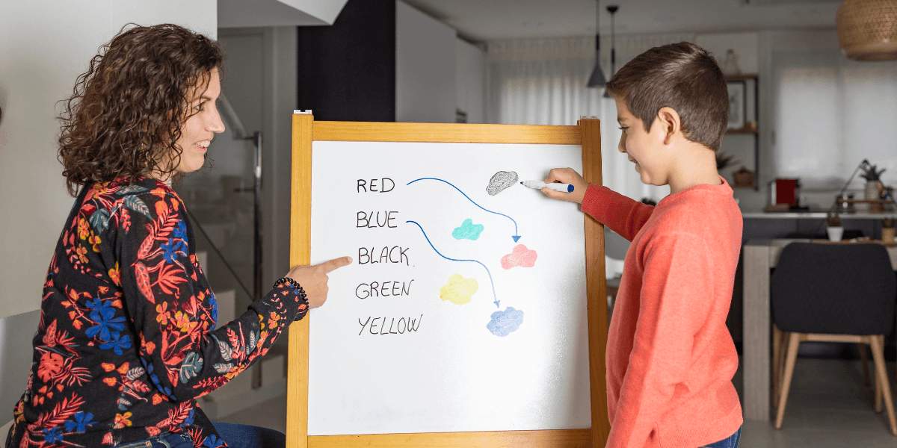

¿Por qué los niños aprenden inglés más rápido que los adultos?
1. Cerebro en estado “esponja”
En los primeros años, el cerebro de los niños aún se desarrolla, con redes neuronales altamente plásticas. Por tanto, adquieren sonidos, estructuras y vocabulario con mayor facilidad que los adultos.
Desde el nacimiento, los bebés son capaces de aprender una gran cantidad de sonidos y sus significados. A los pocos meses de vida, y a través de una intensiva inmersión lingüística, es posible distinguir patrones sonoros, identificar tonalidades y asociarlos con su significado.
2. Exposición continua y sin esfuerzo
Los niños escuchan inglés todo el tiempo en contextos naturales: canciones, cuentos, rutinas. Aprenden sin darse cuenta y se atreven a reproducir sonidos sin temor.
Los niños posee una capacidad asombrosa para aprender todo tipo de conocimientos y destrezas. Esta facilidad de aprendizaje se debe una inmensa curiosidad por conocer el entorno que les rodea; los niños juegan y exploran su entorno, y de dicha situación, surge el aprendizaje natural y sin esfuerzo
3. Jugar fomenta la motivación
Cuando el aprendizaje se basa en el juego, los niños están motivados, aprenden con alegría y no ven el inglés como una obligación.
En comparación con los adultos, los niños cuentan con la ventaja de que el cerebro de es extremadamente plástico, lo que significa que posee una gran capacidad para adaptarse y asimilar nueva información sin dificultad. Además, los adultos poseen otras cuestiones que pueden limitar su capacidad al aprendizaje como son las experiencias anteriores, las inhibiciones, los miedos a cometer errores, entre otros. Los niños, en cambio, aprenden desde el juego y la imitación en contextos entretenidos y libres de presiones externas.

4. Primero comprenden, luego producen
Gracias a la interacción diaria con sus padres y familiares, los niños no solo comienzan a comprender una gran variedad de instrucciones sencillas y complejas, sino que también comprenden las intenciones detrás de ellas. Aproximadamente hacia el primer año de vida, la mayoría de los niños ya están listos para articular sus primeras palabras. Este aprendizaje, aunque a veces parece ser «mágico», no es más que la capacidad innata de los seres humanos de producir y reproducir ideas y pensamientos a través de un sistema de signos llamado: lenguaje.
Al igual que con su lengua materna, primero comprenden (escuchan e imitan), y más tarde comienzan a hablar y formular frases complejas.
English Learning Movers: Una Academia Innovadora
En English Learning Movers, aprovechamos esta capacidad innata de los niños. Nuestras clases están diseñadas para ofrecer exposición continua, contexto lúdico y actividades sensoriales: música, movimiento, juegos y cuentos. Esto permite que el inglés se integre de forma natural y divertida, aprovechando su plasticidad cerebral y motivación intrínseca.